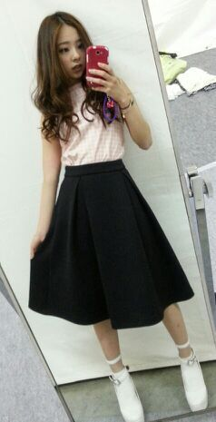

| 2014/04 22 Tue | 横浜 個別 握手会.. *♪ ろってぃ−よん(*・ｘ ・)ノ~~~♪ |
こんにちわ


ろってぃ−こと川村まひろです..*
乃木のの聴いてくださったり
乃木坂46SHOW見てくださったり
関西地区でも、ラジオやTV見てくださったり
皆さん色々と ありがとうございます ! !
そして 一昨日 日曜日は 個別握手会でした.♪
4部と５部ではそれぞれ違う私服で参戦致しましたぁ..*
こんな感じ

ハイウエストのショートパンツに
上は 赤とオレンジの間、、、みたいな色なの〜(*´ー｀*) 私この色 好きなんよね.*
後 もう一着が、黒の膝丈スカートに
うすピンク色のギンガムチェック..* こんな感じ
私がリボンのピアスしてるの珍しいでしょ*^^*？
全身shot .♪

さあっ

あなたはどっちのろってぃ−を選ぶう(/-＼*)？
てへ.
ちなみに 黒のスカートはまいやんと買い物に行った時に購入した物です..* その時まいやんは、いい感じにダメージのあるジーンズを購入してたよん.♪
握手会に来てくださった皆さん ありがとうございます(*´∀｀) 初めましてのかたがたくさん来てれて本当に嬉しかったです ! 楽しかったです。
これからも、もっともっとたくさんの方と握手会したいよ
 乃木family だいちゅきよ..*
乃木family だいちゅきよ..*
ぢゃあ、また更新致します。
(*´ω｀*) のし Rotty
コメント(179)
2014/04/22 13:30